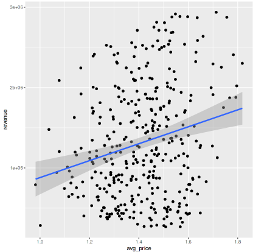
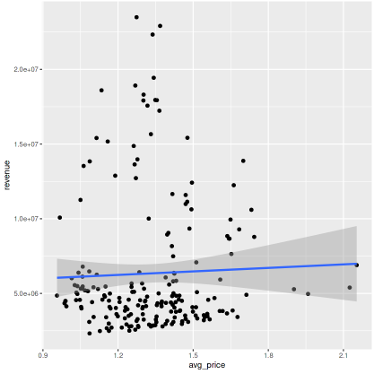

Research question
should the store Avacando change it's avacado prices to increase revenue?
First, we will import our avocado dataset from Kaggle.
avocado = read.csv(file = 'Avocado.csv', header = T)
Next, we need to view our data to clean and prepare it for answering our research question. We can start by filtering out all region variables that aren't cities. This ensures that our comparisons later on are apples-to-apples rather than apples-to-oranges.
avocado <- avocado %>% filter(!(region %in% c("TotalUS", "Northeast", "SouthCentral", "Southeast", "West", "Midsouth")))
Our data is almost clean enough, but we can further eliminate some columns that we know we won't need for our analysis.
avocado <- avocado[, c("Date", "AveragePrice", "Total.Volume", "year", "region")]
To address our research question, we need to create a new dataset that displays the prices and volumes for each city. Additionally, we'll implement a filter specifically for the year 2015.
avocado_2015 <- avocado %>%
mutate(month = as.numeric(substr(Date, 6, 7))) %>%
filter(year == 2015) %>%
group_by(month, region) %>%
summarise(avg_price = mean(AveragePrice), vol.per.month=sum(Total.Volume), revenue=sum(Total.Volume)*mean(AveragePrice)) %>%
filter(region != "California")
With our data now prepared, the next step is to determine the most effective way to visually represent it and gain insights into the correlation between avocado prices and revenue. Our optimal approach is to generate scatterplots, where each city is represented as a data point. This approach will allow us to identify any potential correlations or trends in the data.
Although our dataset doesn't directly provide revenue figures, we do have the price and sales volume data. By multiplying these two factors, we can derive the revenue information we need. It's beneficial to segment our cities into two categories, which will allow us to discern potential variations between smaller and larger cities. Specifically, cities with an avocado sales volume of under 2,000,000 per month will fall into the "small" category, while those with a volume of 2,000,000 or more will be included in the "large" city scatterplot.
Here's how we can craft a scatterplot to depict the correlation between avocado prices and avocado volume specifically for the year 2015. This visualization will be stratified by city, distinguishing between cities with lower to moderate sales volumes and those with higher sales volumes.
Scatter Plot: Low Volume
scatter = ggplot(avocado_2015 %>% filter(vol.per.month < 2000000), aes(x = avg_price, y = revenue)) +
geom_point(size = 1) +
geom_point() +
geom_jitter() +
geom_smooth(method = "lm")
scatter

Scatter Plot: high Volume
scatter = ggplot(avocado_2015 %>% filter(vol.per.month > 2000000), aes(x = avg_price, y = revenue)) +
geom_point(size = 1) +
geom_point() +
geom_jitter() +
geom_smooth(method = "lm")
scatter

Observing the scatterplots provided above, we can see a correlation between avocado prices and monthly revenue in cities characterized by lower sales volumes—typically, cities with smaller populations. This insight suggests that there might be an avenue for Avocando to explore potential price increases for avocados in regions with relatively lower sales volumes. On the other hand, the scatterplots reveal that there is no discernible correlation between price and revenue for avocados in cities with higher sales volumes. This indicates a different scenario where price adjustments may not significantly impact revenue in larger markets.
If you're interested in seeing more problems I've solved, similar to this one, you can check out my kaggle profile: kaggle.com/blakeunderwood